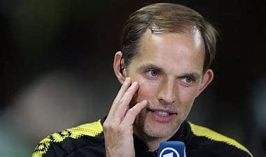

Subscribe to our News letter
Be the first to receive the latest buzz contests & more!
SUBSCRIBE
We Are Uganda News
Sports We Are Uganda 08 April 2022
Thomas Tuchel
Chelsea's defensive problems in the last two games are a minor blip following the international break and the team must stick together and refocus ahead of their Premier League clash with Southampton, manager Thomas Tuchel said on Friday.
Chelsea's defensive discipline has been the hallmark of Tuchel's tenure, with the London club winning the Champions League and Club World Cup last year largely due to solid performances at the back.
But they were beaten 3-1 by Real Madrid in the first leg of their Champions League quarterfinal on Wednesday, after a 4-1 league thrashing by Brentford last weekend.
"I hope (it is a blip) and there are a lot of reasons to think so. It came more or less out of nothing, nobody was here, and then we start losing matches and conceding goals," Tuchel told reporters ahead of Saturday's game.
"It's challenging and it's on us to find solutions and not to complain too much. We should not to worry too much, refocus on our strengths and keep belief."
Tuchel said his third-placed team were not happy with recent performances but did not have any problems with confidence or a tight schedule.
"The schedule is very challenging because we played in competitions to the end. We are, I think with Liverpool, far ahead in game minutes," Tuchel said.
"In this period, in 2022, we had a lot of extra-times we played too, maybe another two matches worth of minutes. So when you face Brentford, Southampton, Crystal Palace, Arsenal... teams not involved in so many games, it's a challenge.
"But there is no need to look for excuses. This is the way it is if you work and play for Chelsea."
Winger Callum Hudson-Odoi is unavailable due to a back injury while forwards Romelu Lukaku and Hakim Ziyech are doubtful due to minor injuries


Be the first to receive the latest buzz contests & more!
SUBSCRIBE